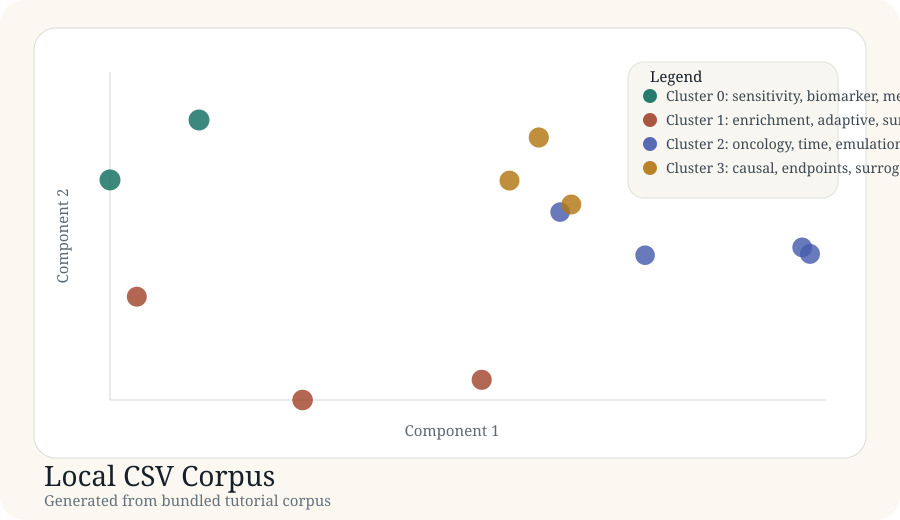

Tutorial article
Local CSV Corpus
This article documents a real generated tutorial run from the bundled corpus in docs/tutorial-data/local-csv-corpus.csv.
Background
Many real review projects start from a manually assembled bibliography rather than from a live API query. A good tutorial should show that the package still produces the same category of artifacts in that setting.
Purpose
This example checks whether a local CSV corpus can still be organized into recognizable methodological clusters such as causal sensitivity methods, adaptive designs, and target-trial-style registry analyses.
Data used
Source file: local-csv-corpus.csv. The corpus contains 12 records with titles, abstracts, and years.
| Record | Title | Year |
|---|---|---|
| local-001 | Methods for causal mediation in translational studies | 2022 |
| local-004 | Survey of adaptive enrichment designs | 2023 |
| local-007 | Target trial emulation for oncology registries | 2024 |
| local-010 | Reporting checklist for causal analyses in registries | 2024 |
Code used
The article is backed by the same executable generator. For a local CSV example, this is valuable because it proves the package is not conceptually tied to PubMed or OpenAlex.
records = load_records(DATA_DIR / "local-csv-corpus.csv") vocab, vectors, _ = build_tfidf(records) centered, _ = center_vectors(vectors) coords = project(centered, top_components(centered, 2)) labels, centroids = kmeans(vectors, 4)
Result figure

Results
| Cluster | Theme | Size | Mean probability |
|---|---|---|---|
| 0 | sensitivity, biomarker, mediation | 2 | 0.90 |
| 1 | enrichment, adaptive, survey | 3 | 0.83 |
| 2 | oncology, time, emulation | 4 | 0.77 |
| 3 | causal, endpoints, surrogate | 3 | 0.81 |
Generated artifacts
Interpretation
The map separates adaptive-enrichment design papers from target-trial emulation and causal sensitivity work, which is exactly the kind of distinction a review team would want from a local bibliography mapping workflow.
This is also the most practically important tutorial because it shows that the artifact contract of `litmap` is broader than any single external literature source.